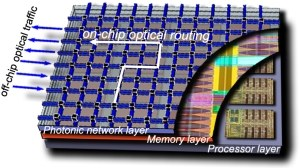

Researchers at the Lightwave Research Laboratory, Columbia University have been working on exploring architectural aspects of future on-chip photonic (as opposed to electronic) networks. Recent advancements in silicon nano-photonic technology have opened the possibility of integrating photonics for chip-scale interconnection networks. In comparison to electronics, photonics has the potential to offer higher-bandwidth connections by leveraging data parallelism offered by wavelength-division-multiplexing (WDM). Many photonic topologies have been proposed by other researchers in an effort to improve computing performance, but so far less emphasis has been placed on understanding whether such designs are feasible from a physical-layer standpoint.
The group has used OMNeT++ simulations to perform detailed physical-layer analysis of chip-scale photonic interconnection networks; to the authors' best knowledge, this is the first such detailed physical-layer analysis. They used simulation because it is not currently practical to test full network topologies in a laboratory environment. The simulation framework they have developed has been published as open-source software.
The PhoenixSim simulator is based on the OMNeT++ simulation environment, and it incorporates detailed physical models of basic photonic building blocks such as waveguides, modulators, photodetectors, and switches. More complex photonic circuits and full topologies can be created by properly arranging these building blocks. These composite structures can then be analyzed within the simulator to determine the overall performance characteristics.
In the quoted study, the group evaluated a previously proposed interconnection topology (Torus) and two newly introduced ones, TorusNX and Square Root, and explored the impact of three physical-layer metrics on system scalability, performance, and efficiency. This is only a first result; as the PhoenixSim simulator allows researchers to analyze the overall scalability and performance of various network designs in terms of physical-layer metrics such as insertion loss, crosstalk, and energy, many more results can be expected, contributing to the eventual realization of practical on-chip photonic networks.
Johnnie Chan, Gilbert Hendry, Aleksandr Biberman and Keren Bergman (Dept. of Electrical Engineering, Columbia University), 2010. "Architectural design exploration of chip-scale photonic interconnection networks using physical-layer analysis". OFC/NFOEC 2010: Optical Fiber Communication (OFC), collocated National Fiber Optic Engineers Conference, San Diego, 21-25 March 2010.
Read also a follow-up paper:
Gilbert Hendry, Shoaib Kamil, Aleksandr Biberman, Johnnie Chan et al. (Lightwave Research Laboratory, Columbia University; Computer Science Dept, Columbia University; CRD/NERSC, Lawrence Berkeley National Laboratory), 2009. "Analysis of photonic networks for a chip multiprocessor using scientific applications." In Proceedings of the 2009 3rd ACM/IEEE international Symposium on Networks-on-Chip (May 10 - 13, 2009). NOCS. IEEE Computer Society, Washington, DC, 104-113.
{% include next_casestudy_links.html %}